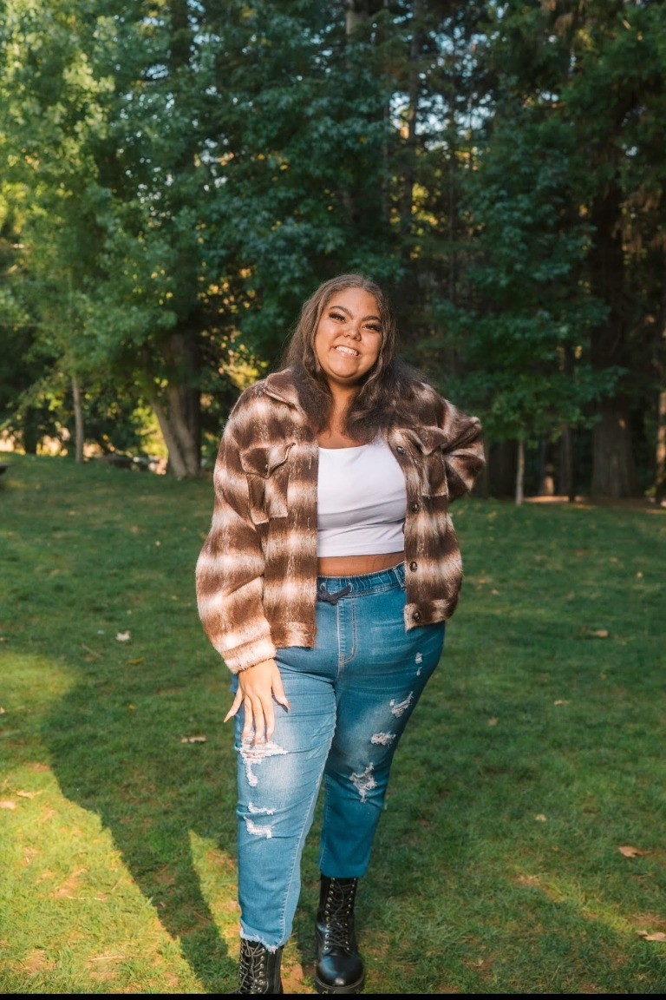

★ Stars Art ★
Creating Beautiful Art and Capturing Moments
Here you can view my Art or Pet photography
★ About The Artist ★

Hi My name is Aine and I am the artist behind Starsart. I love doing mix media art where I combine different materials and techniques to create unique and expressive pieces. I take inspiration from nature and my love and faith in God to create art that is both meaningful and visually appealing.I also Love to take photographs of my pets and friends pets to capture their unique personalities and moments.
Services
Art pieces
These are pieces of Art I've created. Some are inspired by nature or my faith in Jesus Christ, available for purchase
Explore Art PiecesCommision's
Custom pieces created based on your specific requirements and vision on a canvas. Made on request
Request a CommissionPet Photography
Photography sessions of your pets to capture their unique personalities and moments. View previous photos
Pet PhotographyContact
To inquire about commissions, artwork, or pet photography, send a message and I'll be happy to help.
Visit the Contact Me page